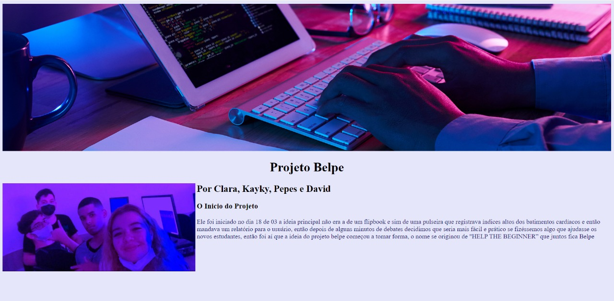
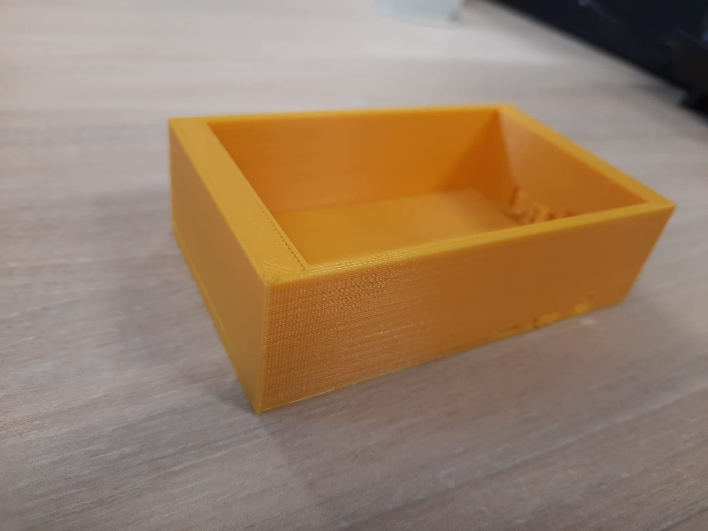
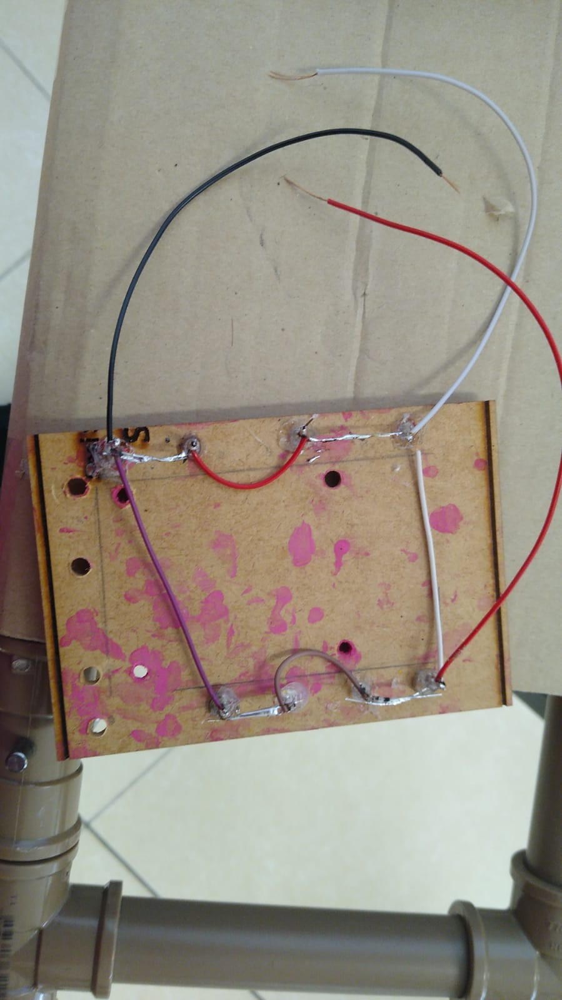
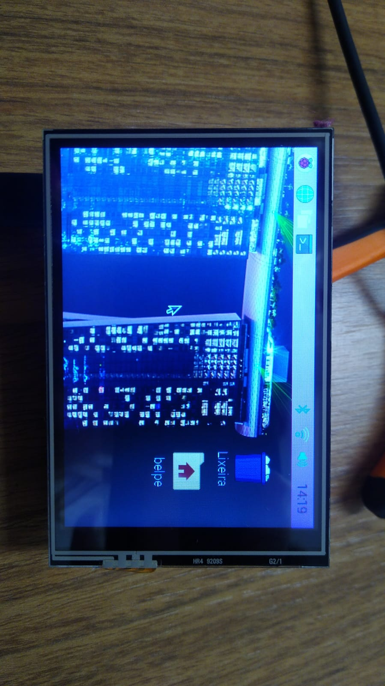
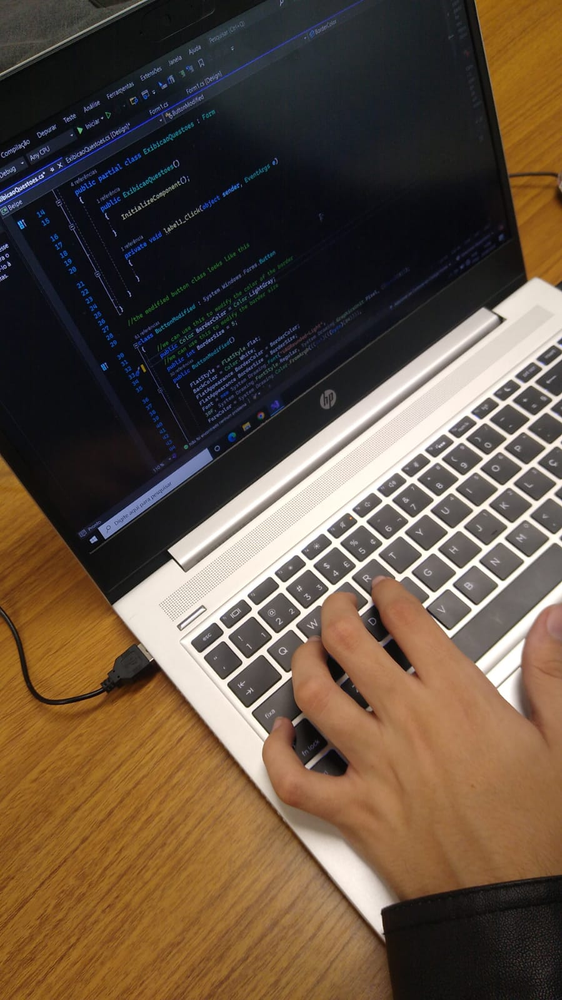
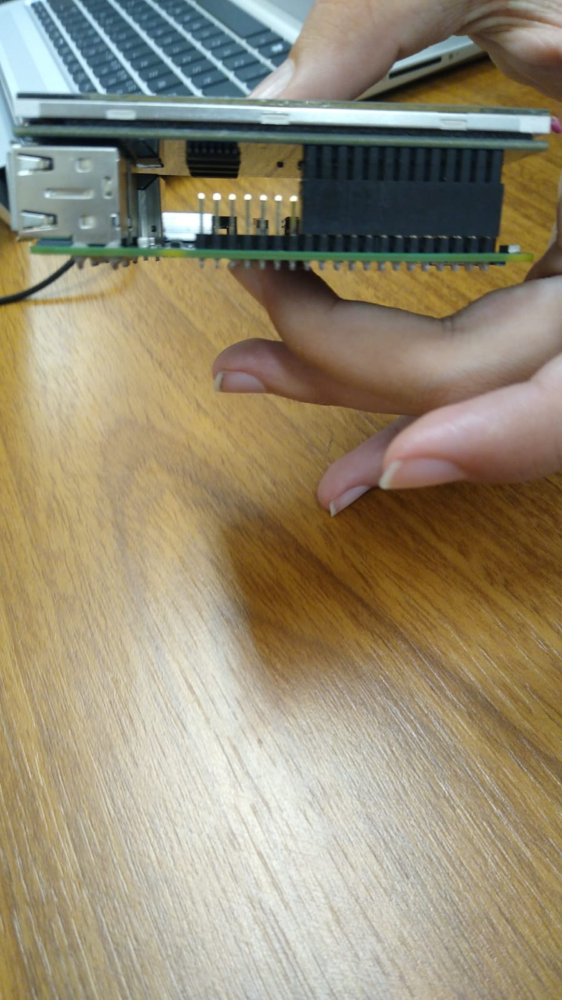

O Desenvolvolvimento do Projeto
Relatório 1
Ele foi iniciado no dia 18 de 03 a ideia principal não era a de um flipbook e sim de uma pulseira que registrava índices altos dos batimentos cardíacos e então mandava um relatório para o usuário, então depois de alguns minutos de debates decidimos que seria mais fácil e prático se fizéssemos algo que ajudasse os novos estudantes, então foi aí que a ideia do projeto belpe começou a tomar forma, o nome se originou de "HELP THE BEGINNER” que juntos ficaria Belpe.
Relatório 2
Começamos a ver como seria a programação principal do flipbook e como iríamos iniciar o site do nosso projeto,e ver como faríamos paro o projeto apresentar as questões e as respostas na tela, e de que forma iremos estruturar o projeto, quais componentes íamos usar e qual a linguagem de programação para esse componente, como seria o layout do nosso projeto, como ele iria funcionar e como iríamos montá-lo,e se íamos precisar de mais alguns componentes para montá-lo, depois de debatermos um pouco percebemos que seria melhor usar o raspberry pi ao invés de usar arduino, no nosso projeto, pois além de ser programado em python ele seria mais adequado ao nosso projeto.
Início do Site
東野幸せ
Relatório 3
Nesse dia em questão não conseguimos prosseguir em muita coisa, pois o SENAI estava sem luz então, passamos o dia procrastinando, pois não tínhamos muito o que fazer, o lado bom foi que passamos a aula inteira rindo, então nem tudo foi perdido, também não podemos, ir pra casa já que não queríamos ganhar falta e nem abandonar nossos amigos no curso, então ficamos, juntos da professora Blanca na sala durante 5 horas.
Relatório 4
No dia seguinte, a luz estava de volta em nossas vidas, então demos continuidade ao projeto como o esperado, Por mais que eu não estivesse fisicamente no SENAI eu estava trabalhando no projeto,então nesss dia eu consegui finalmente criar um link, para o nosso projeto, onde você provavelmente está lendo isso, Enquanto eu quase macetava meu computador para gerar um link, meus amados colegas estavam presencialmente trabalhando em criar o login do usuário do projeto, e desenvolvendo as questões e tentando montar a base do projeto no solidworks.
Relatório 5
Na semanas seguintes, continuamos tentando montar a base do projeto no solidworks, e estávamos à espera da nossa telinha, uma raspberry 3.5 A qual não chegava, e sem ela não conseguimos montar o projeto, mas além dessa, pequena ocorrência, continuamos a desenvolver as questões sobre programação, e trabalhar no site.
Relatório 6
O site acabou caindo, pois fizemos alguma coisa errada no github e não consegui reverter por momento, então voltamos a programar ele pelo bloco de notas apenas para fazer as modificações necessárias, até migrarmos para o Vscode onde se tornou muito mais rápido de se programar, então voltamos a modificar o site e a deixar ele bonitinho
Relatorio 7
Imprimimos o primeiro molde do nosso projeto e recebemos a grande notícia de que nossa tela tinha chegado, então começamos a modificar a case, e fazer os ajustes necessário nela, e a desenvolver o powerPoint para uma apresentação do projeto, e finalmente
consegui lançar o site denovo, finalizamos as questões principais do projeto, e remodelamos a case.

Relatorio 8
Nos tivemos algumas dificuldades para conseguir que o raspbarry funcionasse depois de algumas tentativas durantes as semanas
do projeto finalmente conseguimos fazer nosso projeto funcionar,já perto da data de apresentação do trabalho.

Funcionamento da Tela
Relatorio 9
Partimos para a programação onde fazemos a interface das perguntas e o design da página,
tendo diversas dificuldades durante a programação, mas conseguindo contorna-las no final.

Relatorio 10
A case que fizemos não conseguimos imprimir, por conta de alguns problemas na impressora 3d,
então resolvemos fazer apenas uma base onde o raspbarry ficaria fixo em cima, e também aproveitamos para fazer as conexões de led, que ficaria por baixo da case.
